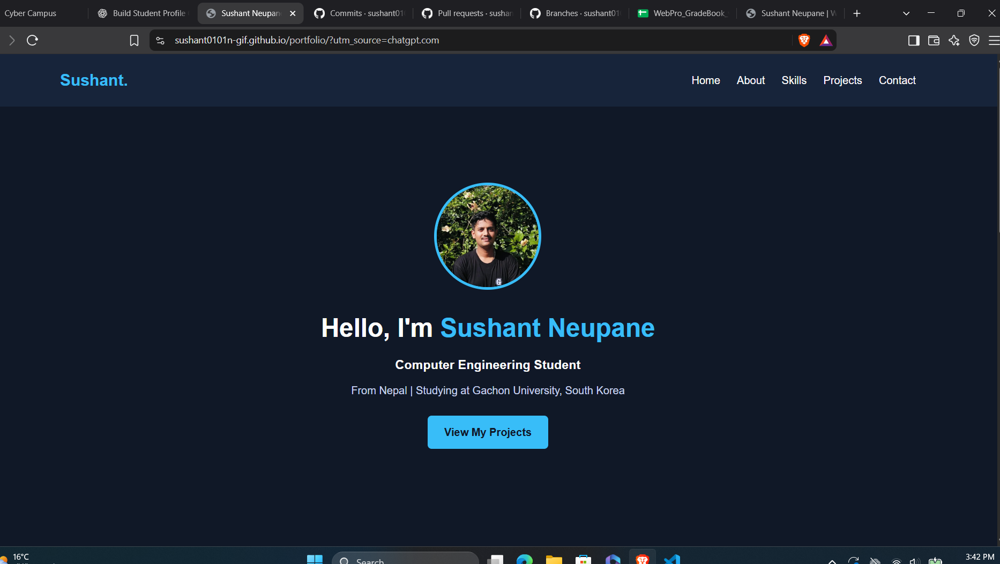
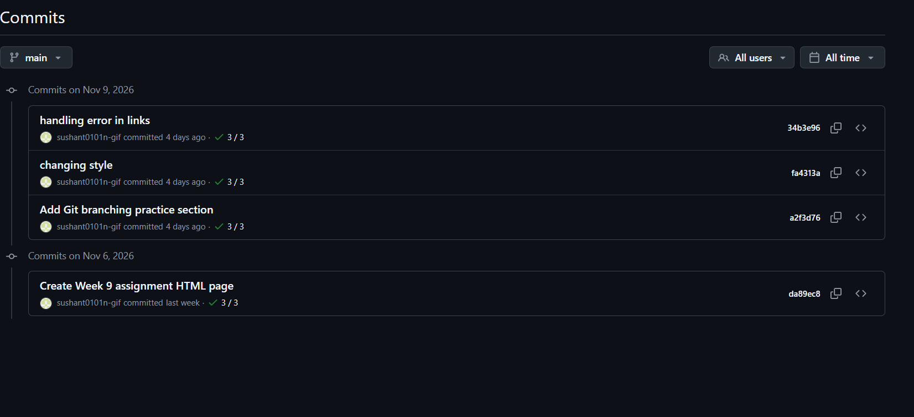
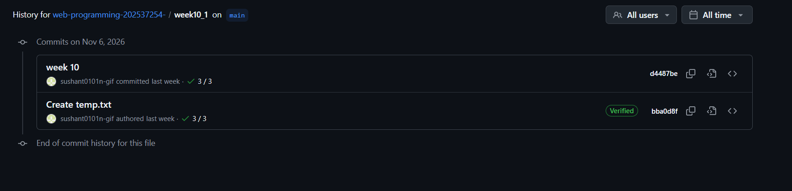

Portfolio Assignment
A personal portfolio website presenting my profile, computer engineering background, skills, projects and contact section.

Repository: sushant0101n-gif/portfolio
GitHub Repository Live WebsiteWEB PROGRAMMING · COURSEWORK PORTFOLIO
Neupane Sushant
Computer Engineering Student · Gachon University
Documenting my assignments, projects and GitHub practice.
Explore Assignments My GitHubTwo practical assignments connected to my GitHub repositories and published websites.
A personal portfolio website presenting my profile, computer engineering background, skills, projects and contact section.

Repository: sushant0101n-gif/portfolio
GitHub Repository Live WebsiteA coursework webpage created with HTML and CSS. It includes assignment information and GitHub Pages deployment.
Repository: sushant0101n-gif/webpro-w9
GitHub Repository Live WebsiteThese are the original assignment files stored in my Web Programming course repository.
Open task1.html Open task2.htmlCommit history from my actual GitHub repositories.
The repository history records the original Week 9 page, the Git branching practice section, and later style and link updates.

November 6–9, 2026
View Commit HistoryThe course repository records commits for the Week 10_1 assignment folder and its submitted files.

November 6, 2026
View Commit HistoryThese commit records show the development and updates made to the Webpro-W9 assignment.
I am a Computer Engineering student at Gachon University. This page collects my Web Programming coursework and provides direct access to my source code, deployed projects and GitHub history.
The purpose is to show the actual work completed during the course, along with links that can be opened and checked.